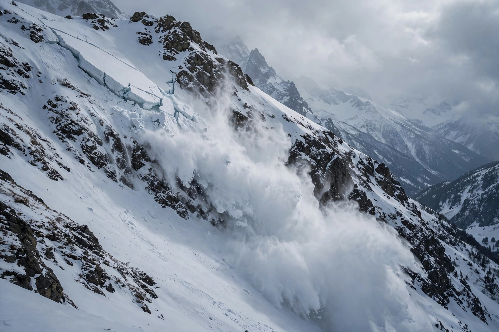

Avalanche

An avalanche is a rapid flow of snow down a slope, set in motion when the snowpack's internal strength can no longer hold the weight upon it. Avalanches range from small loose-snow sluffs to slab avalanches hundreds of metres wide that reach highway speeds and can destroy forests and buildings.
They are a leading cause of death in winter mountain recreation, and a perennial hazard to alpine villages, roads and railways.
Mechanism
Snow accumulates in layers with different properties; a weak layer (such as buried surface hoar or depth hoar) beneath a cohesive slab is the classic failure structure. Loading by new snow, wind transport onto lee slopes, rain, warming, or the weight of a single skier can trigger fracture that propagates across the slope, releasing the slab.
Dry slab avalanches typically start on slopes of 30–45 degrees and can accelerate beyond 100 kilometres per hour; wet avalanches move slower but are denser and harder to escape. Powder clouds riding above the dense core extend the destructive reach.
Forecasting and protection
Avalanche centres issue daily danger ratings (low to extreme) from snowpack observations and weather data; recreational travellers manage risk with training, route choice, airbags and transceivers. Mountain communities defend themselves with snow sheds and deflection dams, controlled release with explosives, and reforestation of starting zones. Climate warming is shifting avalanche activity toward wetter, heavier snow in many ranges. See {L('Natural_disaster')}.
See also: Natural disaster · Snow · Mountain · Landslide